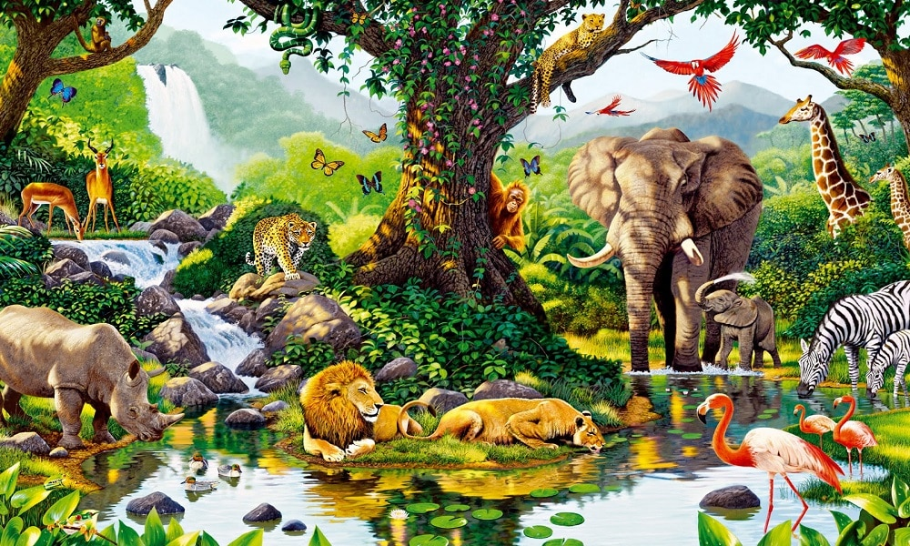
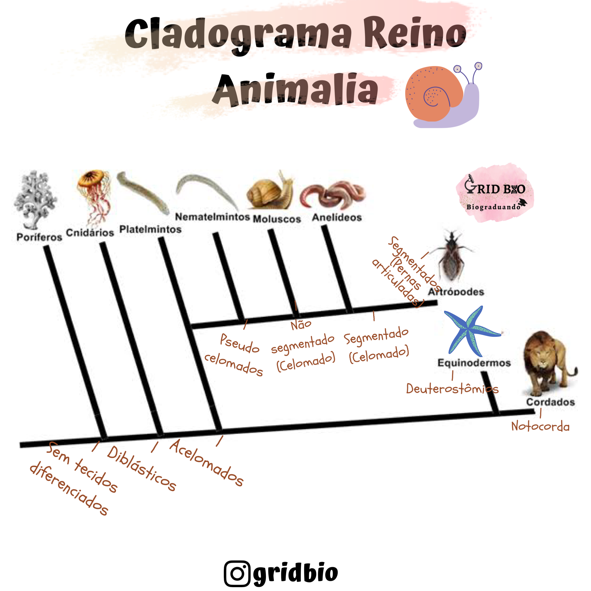

Características do reino

Apesar de ser um reino com organismos muito distintos em anatomia e fisiologia, o reino animal é composto unicamente por seres
multiceluares, eucariones e heterótrofos, o que o diferencia dos outros reinos. Apesar de existirem organismos que não seguem essa
regra, o reino animal é composto, em grande maioria, por animais que se locomovem, se reproduzem tanto de forma sexuada quanto assexuada.
Além disso, com exceção das poríferas, os animais deste reino possuem células que se organizam em tecidos. Por fim, podem apresentar tanto
simetria bilateral (duas metades simétricas) quanto radial (vários planos divididos por eixos que partem do centro do corpo).
São mais de 1 milhão de espécies pertencentes ao reino animal, que podem ser dividios em vários filos. Os animais pertecentes do reino
animal estão dispostos em todos os ambientes, terrestre, aquático e aéreo, além de parasitas. Para fins didáticos, é possível dividir
os animais entre vertebrados e invertebrados, sendo o primeiro grupo apenas 5% dos animais, ao contrário do que muitos pensam.
Filos do reino animal

Como dito, os animais do reino animal são divididos em 30 filos, porém apenas 9 deles são estudados, que estão brevemente apresentados
a seguir:
- Poríferos: É o filo mais simples, marcado por animais com poros, aquáticos e que não se movem e nem possuem tecidos organizados.
São animais filtradores cuja digestão ocorre no interior das células.
- Cnidários: Possui animais aquáticos, em grande maioria marinhos, e alguns possuem habilidade de locomoção. São marcados pelo
surgimento de uma cavidade digestiva.
- Platelmintos: Conhecidos como vermes chatos, possuem o corpo achatado e podem ser parasitas ou apresentarem vida livre. Possuem
simetria bilateral e sistema digestório incompleto.
- Nematelmintos: Os nematelmintos são vermes de corpo cilíndrico e, assim como os platelmintos, podem ser parasitas ou apresentarem
vida livre. São marcados pelo surgimento de sistema digestório completo.
- Anelídeos: O filo dos anelídeos, como sugerido pelo nome, é formado por animais que possuem corpo cilíndrico e dividido em anéis.
Podem ser tanto aquáticos quanto terrestres.
- Equinodermes: Os equinodermes são animais aquáticos, que possuem um endoesqueleto calcário e são marcados pela simetria radial.
- Moluscos: Os moluscos, que podem ser tanto aquáticos quanto terrestres, apresentam o corpo mole e, geralmente, possuem uma concha
que pode ser interna ou externa.
- Artrópodes: O filo dos artrópodes é o mais diversificado, possuindo animais aquáticos, terrestres e aéreos. São marcados pelo
corpo segmentado e apêdices articulados. Além disso, possuem exoesqueleto de quitina, o que faz com que não tenham crescimento
constante, já que o esqueleto tem que ser trocado.
- Cordados: Os animais do filo dos cordados possuem entre suas características marcantes a presença de medula espinhal e coluna
vertebral e presença de notocorda durante o desenvolvimento. O filo possui alguns animais invertebrados, além de todos os animais
vertebrados do reino animal.